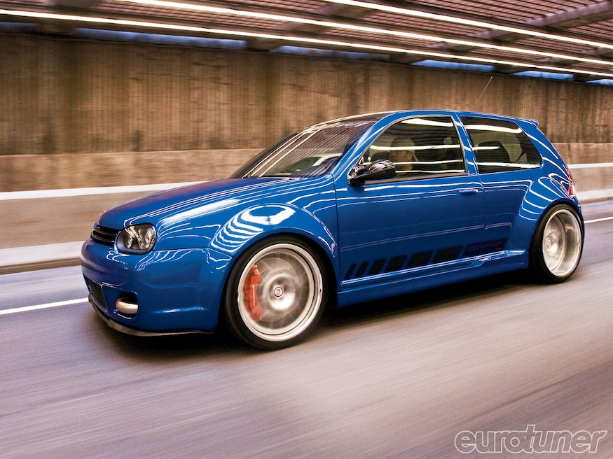

In 2002, Volkswagen produced the Golf R32 in Europe as a 2003 model year. It was the world's first production car with a dual-clutch gearbox (DSG) — available for the German market.[7] Due to unexpected popularity, Volkswagen decided to sell the car in the United States and Australia for the 2004 model year Volkswagen R32. Volkswagen R32 interior The R32 shared many mechanical components with the 3.2-litre Audi TT, including the 3,189 cc (3.2 L; 194.6 cu in) DOHC 24v VR6 engine (ID codes: BFH/BML), which produced 241 PS (238 bhp; 177 kW) at 6,250 rpm and 320 N⋅m (236 lb⋅ft) at 2,800 rpm.[8] Further additions included Haldex Traction-based 4motion on-demand four-wheel drive system, a six-speed manual transmission, aluminum front control arms, independent rear suspension, and larger 334 mm (13.1 in) disc brakes with gloss blue painted calipers. Exterior changes included R32 specific bumpers and side skirts, a hatch spoiler, and 18" OZ Aristo alloy wheels (Ronal produced the wheels towards the end of production). The interior of the R32 was equipped with Climatronic automatic climate control, sport seats from König with R logo embroidery, a sunroof (US only), Xenon Headlamps (for Europe), and more
I will continue to use this page for practice and see what i can do, i need my carrer off the ground for my future...

